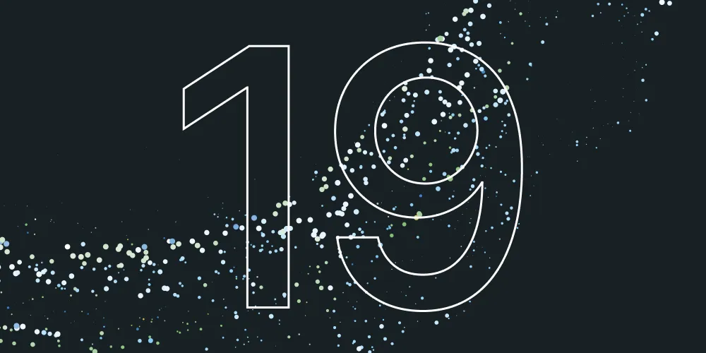
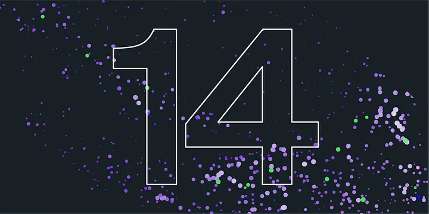

-

DOTLY is an innovative application that addresses this problem head-on. By providing a user-friendly platform with visually captivating and interactive displays, DOTLY transforms Polkadot account statistics into an informative and insightful experience. Users gain access to a wide range of statistics, including account overviews, balance and extrinsic histories, badges, and action insights. DOTLY goes beyond numbers by incorporating visually appealing charts.
-
TPScore aims to provide non-technical users in the Polkadot ecosystem with an accessible and user-friendly platform for analyzing TPS (Transactions per Second) data. Our goal is to bridge the gap between technical intricacies and user-friendly visualization, empowering individuals to make informed decisions about blockchain adoption, investment, and development.
-
TreasuryTracker is an innovative analytics portal designed to provide comprehensive insights into the OpenGovernance referenda on Polkadot and Kusama. Through intuitive charts, tables, and reports, the platform aims to track, analyze, and present vital data, allowing the community to understand areas of treasury funding and obtain a holistic overview of the governance process.

$ 10000
-
Our R&D roadmap was conceived and kick-started before the creation of this RFP, which was presented to us during the course of our previous research grant. Nevertheless, we believe the proposed application (Polkadot Analytics Platform) is aligned with the RFP's requirements and main goals. Both aim at providing data analysis in a way that advanced non-technical users can consume, without requiring programming skills.
-
With hyperdot, users can easily query and analyze crypto data from Polkadot, Kusama, and other parallel chains built on the Substrate Runtime. Hyperdot separates the indexing and computation of on-chain crypto data from the off-chain data storage, analysis, and querying, addressing scalability issues present in many data analysis platforms. Hyperdot offers multiple data engines to adapt to different scenarios.
-
This project consists of the development of a custom-built portfolio tracker, explicitly devised for NFTs within the Polkadot blockchain network, catering to the specificities of NFT investment strategies.
$ 30000
-
XCMSend aims to be the seamless way to interface with chains via XCM, designed to provide an unbiased platform, and user-friendly cross-chain message transfers within the Polkadot ecosystem. Think of a no-code layer to compose transactions.
$ 30000
-
Lastic is a pioneering blockspace marketplace developed on Polkadot. Our mission with Lastic is to democratize Polkadot blockspace, offering cost-effective and accessible solutions. Our marketplace facilitates the purchase and sale of 'Coretime,' aiming to normalize pricing, present user-centric payment options, and possibly launch subscription or futures offerings. With Lastic, deploying or extending a Polkadot project becomes seamless.
-
Melodot uses 2D Reed-Solomon for data expansion, providing better sampling efficiency. It generates KZG commitments in the row direction, avoiding fraud proofs, similar to Ethereum's Darksharding. Block headers contain KZG commitments and data locations for different apps, allowing light clients to sample or download only data relevant to themselves.
-
The TWAMM protocol represents a sophisticated advancement of the conventional constant product (Uniswap-v2 style) automated market maker (AMM) framework. It introduces a novel feature wherein users can split their orders into infinitely small fractions and execute them at each block interval. This feature addresses a significant shortcoming of traditional AMMs that encounter severe slippage issues when processing sizable orders, leaving them vulnerable to front-running tactics.
-
Aisland DocSig (in short ADC) solves the problem of exchanging signed agreements and storing them permanently with legal validity. The user can authenticate using his/her own wallet, create a blank document and edit, or clone a public template or upload a document. ADC keeps a copy of the different drafts till the first signature is applied.
$ 9000
-
The main goal is to implement and maintain a Filecoin-like system parachain that uses DOT as the native token and is easily usable for all kinds of parachain projects in the ecosystem via XCM.
$ 30000
-
Myriad Social is a social network that allows users to have their own platform without being controlled by a central authority. It is decentralized and censorship-resistant Our app is developed using the Myriad blockchain, specifically as an appchain that runs on the Octopus Network. This provides several benefits. Firstly, it's censorship-resistant since there's no central control point. Secondly, it offers sovereign control as all data is kept in user-hosted instances with the freedom to host.
$ 30000
-
The goal is to provide a Substrate system pallet that allows to deploy and interact with Smart Contracts written in the Move language, by providing a Move Virtual Machine (MoveVM) as a pallet.The project directly improves the growth potential of the Substrate based ecosystem by providing support for one of the most modern smart contract programming languages and VM types out there - Move.We are interested in creating this project because we are firm believers in the modular vision of web3, and only by collaborative efforts on improving and unifying the technology between different chains and the languages, will we get better products as an outcome.
$ 96000
-
Tuxedo is analogous to FRAME in that they are both frameworks for writing Substrate runtimes. They are also analogous in that they need additional code to serve as parachain runtimes.
-
The project is an ISO20022 based cross-border payment proof of concepts implemented with Substrate off-chain computation and indexed data storage.
$ 25000
-
The Polkadot Contract Wizard has successfully completed its initial phase, making it easier for users to create and deploy standard smart contracts on the Polkadot ecosystem. In the next phase, we aim to expand the scope of the project by implementing additional features and supporting multiple chains. Our goal is to continue enhancing the user experience and versatility of the Polkadot Contract Wizard, making it a powerful tool for both developers and non-developers.
$ 52500
-
Automate ink! smart contract transactions in a recurring way.
-
DAOsign is a decentralized platform for agreements and policies with publicly verifiable and authorized cryptographic proofs and Governance Automation, designed for DAOs. Traditional methods of signing agreements, such as paper-based systems or legacy e-signatures, are prone to fraud and lack transparency, and offer no solution for verification of the signer's identity or signer’s authority to execute the agreement. Instead these systems rely on costly legal proceedings for enforce agreements.
-
The objective of this grant is to develop an open-source monitoring service using the Ocelloids SDK. This service will monitor XCM transfers across selected parachains. The primary purpose is to offer service providers integrating with a single chain (Asset Hub as starting point) and monitoring effects on other chains that are connected via HRMP and that use XCM as their message format. The service will support connecting to the configured networks through light clients in order to reduce infrastructure overhead for service providers. Users will have access to a self-hosted HTTP API to subscribe to XCM transfers and manage their subscriptions. A public Docker image will be published to facilitate service deployment.
-
Dapps have always been a very important part of any blockchain ecosystem, it is where users can connect and interact with blockchain nodes. Given the complex nature of interacting with Substrate-based blockchains, in order for developers to focus on the business logic, a middle layer between dapps and blockchain nodes to facilitate the connections & interactions is always an essential part of the ecosystem and this is where @polkadot/api comes in.
$ 30000
-
The Crosschain NFT Pallet is a unique initiative designed to facilitate the smooth movement of NFTs across various blockchain networks, utilizing the XCM protocol. Through the implementation of this pallet, individuals can effortlessly exchange NFTs between relay chains and parachains.
$ 9800
-
Our ultimate goal is to help companies embrace the benefits offered by blockchain, opening the doors to a new way of doing business. We firmly believe that our project can be a turning point for widespread adoption of blockchain in the corporate sector, simplifying the integration process and providing a seamless and positive experience.
$ 16200
-
Solang Playground will be a web based IDE that allows users to compile and interact with Solidity smart contracts in a browser environment, without prior installation of any of the needed components: Solangor Substrate contracts node. The aim here is to provide an experience similar to what Remix IDE provides, as Remix is the first tool Solidity developers get introduced to in their smart contract learning track.
$ 25000
-
Our proposal is to begin our work by making a full review of the current functionalities of integration tests and E2E tests. From this revision, we will assemble a comparative table, identifying differences and proposing improvements and missing developments to be made for integration tests. For specific cases where the enhancement or missing functionality is clear, and the implementation of the enhancement is deemed feasible, code examples could be provided to show the current limitations of integration tests.
-
ink! analyzer aims to improve ink! language support in integrated development environments (IDEs), source code editors and other development tools by providing modular and reusable building blocks for implementing language features (e.g. diagnostic errors, quick fixes, code completion suggestions, code/intent actions and hover content e.t.c) for the ink! programming language which is used for writing smart contracts for blockchains built on Substrate.
-
The reliability and security of the Polkadot network are fundamentally contingent upon the flawless implementation of Hosts/Nodes. At present, Substrate and Smoldot (implemented in Rust) are actively used in production, while Gossamer (in Go) and Kagome (in C++) are undergoing advanced stages of development. Our primary objective is to develop a comprehensive test suite dedicated to assessing the compliance of Host implementations against the official Polkadot Protocol Specification.
-
The original grant for the Hybrid Block Explorer involved creating a Rust library that can be utilized to create an event indexer for any Substrate chain. A Rust project to index all Polkadot-based chains was delivered. Additionally, a rudimentary browser dapp was produced to provide a user interface to query the index and load event details from the chain.
-
StorageHub is a decentralized storage public good parachain optimized for file based storage and larger data sets that are not suitable to be stored directly in standard parachain storage. The proposed parachain will provide developers in the Polkadot ecosystem with an alternate decentralized and substrate-based storage solution and functionality.
$ 84500
-
Users are now able to take advantage of the highest security feature similar to a cold storage while experiencing flexibility and convenience of the mobile app at minimal cost. Orosign is a self-managing custodial Mobile App for digital assets/identity that suits all demands of Web3.
-
As mentioned above, in this grant we will research threshold cryptographic wallets. We will not develop code at this stage of the project (see the section on Future plans for more details on this), but instead deliver a white paper describing our new cryptographic scheme (including its formal security analysis). Moreover, this white paper will contain a specification that will be a solid basis to enable developers implementing our wallet scheme. Our research in this proposal is mainly based on our prior work on the ECDSA BIP32 wallets [4,5,6]. Let us briefly describe our prior work relevant to this project below.
-

In this grant, we will add data handlers and data models for the base data. Since the Squid Archive directly exposes the network base data of blocks and extrinsics, we will use the GraphQL API of the squid archive in the UI to retrieve this data.
-
When building our app (The Wunderbar Network team is part of the Substrate Builders Program), we have used a very useful existing community template - the Substrate Front End Template from the Substrate Developer Hub. This template is built using React.js and JavaScript. We are proposing to create an alternative version of this template, which would achieve three major outcomes:
-
Profond.ai is web3 tools to help developers and creators to build, validate, and scale their dApps. We provide smart contract builder (NFT and token), analytic, and indexer. We’re focusing on emerging chain and we aim to onboard millions of developers by making it easier onboarding for users to create smart contracts.
$ 10000
-
The Grant Management Web Application is a comprehensive software solution designed to streamline and enhance the process of managing grants. It aims to provide w3f and other grant-making institutions with a centralized platform to efficiently handle grant applications, evaluation, tracking, reporting, and overall administration. By reducing the number of clicks, the web application will enable better navigation of data, better UI, greater ease and effectiveness in the grant management process.
-
This project aims to create a comprehensive web application for managing grant applications (and deliveries in a possible follow-up grant) for the W3F Grants Program, based on data in the GitHub repositories. I will provide an interactive and user-friendly interface for easier navigation for the W3F grant committee. This includes a crawler for easy extraction and calculation of relevant data, a REST API for accessing said data as well as a web-based frontend with a modern look & feel.
$ 10000
-
We propose the development of FiDi DotSight, a platform designed to facilitate interactive on-chain analysis in the Polkadot and Kusama ecosystems. Think Dune for DotSama. FiDi will achieve this by providing a scalable platform that enables users to query on-chain metrics, integrate new protocols, and build beautiful custom dashboards with the power of Subsquid’s data archives. To accomplish this, FiDi, with Subsquid’s support, will offer a SQL-like interface for developers to associate existing and newly developed squids with a dashboard of their choice, along with a suite of default ready-to-use analytical dashboards for users to visualize on-chain data.
-
This proposal seeks to develop the above solution with the support of a Web3 Foundation grant, but critically addresses future maintenance a Polkadot Data Alliance Bounty that can support work on all 3 tiers with child bounties for Polkadot Data Alliance contributors.
-
The Dot-ETL project will utilize prior work on the SubQuery project to index and source block/event/call data on the Polkadot blockchain. The SubQuery project is already able to index and parse block / extrinsic(transaction) / event data on Substrate, persist into a postgres data schema, and serve queries on the data via GraphQL.
$ 26000
-
DINFRA, decentralized infrastructure, is substrate orchestrated infrastructure, a decentralized alternative to public clouds.
$ 47000
-
Blockchainia delivers the benefits of digital ownership straight to gamers fingertips. Our infrastructure will enable developers to create games for gamers that decide to take ownership of their digital achievements. The Blockchainia library of pallets enables affordable pay-to-play games that forever immortalize gamings greatest moments on-chain. As an eventual competitive gaming metaverse, Blockchaina's ecosystem includes a community hosted online multiplayer infrastructure including a game engine that will interact directly with our gamechain for user moderated online gaming.
$ 25000
-
Societal is a specialized blockchain for the creation and management of internative-native organizations. Societal allows all types of groups or communities to build their own online, transparent, and decentralized organization. Societal bundles all of the tools required to create and manage a DAO in one place. Creators will be empowered to construct a DAO with fungible, non-fungible, or a combination of governance tokens. Societal also offers DAO management tooling features like treasury management, specialized governance, task boards, legal structuring, and accounting. This removes the need to use siloed platforms to manage the operations of a DAO. Whether a creator is looking to build a DAO for their organization, raise and deploy investment capital, or decentralize governance of an NFT project, Societal has the necessary tooling for a seamless end-to-end experience.
-
This proposal presents a blockchain that uses a modified Aura in which blocks are sealed. We then implement an encryption-to-the-future (EtF) scheme, where messages can be encrypted for arbitrary slots and epochs in the future. Our proposal consists of a runtime, which modifies Aura and introduces a new pallet to enable the identity based cryptosystem (IBC), a light client, and an SDK which handles synchronization with the blockchain, slot scheduling, and offchain encryption and decryption functionality. In essence, this presents a simplified flavor of 'timelock encryption', though sacrifices full-decentralization for ease of implementation and feasibility (for the time being).
$ 30000
-
Due to a combination of increased population and changing housing needs, there is global housing crisis. According to the UN, the global population is set to reach over 11.2 billion by the year 2100, therefore 2 billion new homes are required in the next 80 years. 20% of all housing is built by small to medium sized real estate developers but access to finance through traditional banks and other financial institutions is complex, time consuming and expensive.
-
To fully imitate the ISO-8583 standard, I have divided this PoC project into two parts: infrastructure and blockchain. Infrastructure components are responsible for imitating the flow of the ISO-8583 message from the merchant to the PCIDSS compliant gateway. Blockchain components are responsible for further processing of the ISO-8583 message and settling the transactions/messages on the Substrate chain.
-
We are basing the core architecture and many of the design decisions on the Pontem networks developed system pallet for Move VM. They had maintained their own fork of the Diems Move language, which was used as the base execution layer for their version. Both of these repositories have not been maintained for a very long time already.
-
Current grant is offering to develop canvas-based browser which allows Polkadot users to create, organize, and share knowledge leveraging three-dimensional Stretch Text space.
-
The goal of this project is to implement an omnichain smart contract infrastructure support for Substrate framework. This will include the implementation of CQRS + Event Sourcing execution environment plus an example smart-contract. The implementation will be done using WASM and/or native Rust Substrate implementation as a pallet. The implementation will include implementing Protobuf support on-chain, serialization/deserialization, aggregated repository, event store, command/operations dispatcher, and events emitter.
-
Patron is your one stop smart contract manager for Polkadot ecosystem. Patron's tech stack consists of Rust (with axum being used as an HTTP server), TypeScript (React, Next.js, polkadot{.js}), PostgreSQL.
$ 63000
-
We are building an extensible open-source tool (or set of tools) to assist ink! smart contract developers detect common security issues and deviations from best practices. To improve coverage and precision, we will persist in research efforts on static and dynamic analysis techniques.
-
There are multiple ways to implement the logic in substrate i.e using pallets or ink smart contracts, or even writing solidity code and compiling it to WASM with the help of a solang compiler. We have to benchmark the performance metrics of the logic implemented using each of the above methods. We have already benchmarked the storage performance(basic data types) of each of the implementations as part of Milestone 1 and 2. Now, we will benchmark CPU-intensive logic, events emission and cross-contract calls across all the four implementations. We hope this will help new developers in deciding the best approach to implement the logic.
-
Stylograph is a framework aimed at enhancing the functionality of substrate-based chains in the Polkadot ecosystem with plugin-like functionality.
$ 100000
-
The adoption of any technology depends on the accessibility and ease of use to both the maintainer and user, blockchain or distributed ledger technologies are inherently a lot difficult to understand and maintain, so we have to build tools to make the process much easier and painless. In the case of Polkadot's substrate based smart contract development we have Ink! playground which helps smart contract developers to prototype and test it before deploying on the parachain in a Sandboxed environment with having to do time-consuming setup of dependencies and also with ability to set up a local environment to do development.
$ 24000
-
The key objective of this grant is to build a tool which allows to compare contracts performance and to track its regressions. Subject of comparison are solidity, and ink! contracts running on parachains (pallet-contract and pallet-evm). Tool will be integrated with CI and running each night, generating measurements data and providing its visualizations.
-
We can most certainly agree that the future is multi-chain. As such, it is not uncommon for users to hold multiple accounts across various chains for reasons such as distinct address formats and security benefits. However, this practice presents a challenge in managing multiple addresses. Adding to the complexity is the need to verify the address of the intended recipient, as it may have changed over time.
$ 19000
-
The envisioned project aims to develop a decentralized security marketplace platform much to the liking of similar existing platforms like hackenproof and Immunefi, with its unique value propositions being the aim to reward users for submitting full-blown security/Functional audits instead of individual vulnerabilities.
-
Ocelloids is an open-source software development kit for building monitoring applications for Substrate-based networks. With Ocelloids, you can easily set up complex multi-chain monitoring logic.
-
Syncra simplifies this process. We're working on a no-code solution to create, manage, and build your decentralized organization. Our goal is to provide a seamless process where protocol owners can launch the DAO within 5 minutes or even less.
-
SanDOx is an integrated development environment, that is thought to leverage Polkadot development process by providing ecosystem developers with right and convenient components and tools. Our team – the TRADELINK TECHNOLOGIES OÜ – is focused mostly on crypto trading tools and lately we have been interested in DEX concepts. Meanwhile we are fascinated by the Polkadot Network and see this SanDOx project as a great opportunity to contribute to the DOT ecosystem and show our skills for future projects.
-
Runtime Pallets are modules for writing the business logic of blockchains in Substrate (a Rust framework for building blockchains). These are usually concise pieces of standalone code with relatively few dependencies and clear specifications, hence tractable targets for performing static analysis and verification. The code quality of a runtime pallet is crucial, as even minor defects can result in major exploits like DoS attacks or the stealing of funds by a malicious party. A static code analysis can help to automate the auditing processes and prevent introduction of defects throughout the software life-cycle.
-
Sybil-resistant faucet is a generic chat bot based faucet solution that can be used on any existing parachain (substrate-based chain, either pallets or ink! smart contracts).
-
Our application seeks to fund the development of a monitoring platform for validator operators.
$ 29000
-
What is ParaSpell: ParaSpell is an XCM & XCMP Developer tool meant to ease the integration of cross-chain functionality into dApps. As we have learnt by now, cross-chain experience between Parachains can be very diverse. ParaSpell means to unify this experience by doing all the research for developers. We have wrapped all XCM pallets from compatible nodes into simple patterns from which it is easy to create XCM calls. As an example, we provide the image below.
$ 10000
-
We aim to resolve the challenge of identifying the optimal technical architecture for a Dotsama-wide on-chain NFT domain service and how XCM can be leveraged to achieve this. Thus, before we can build an XCM-based domain service in ink!, we will need an in-depth understanding of the XCM technology, currently available standards, and their limitations. Once we have developed a deep understanding, we will identify all potential levels of integration, assess their feasibility, and finally propose the technical architecture of an XCM-based domain service.
$ 30000
-
Interstellar is more than a wallet, we have designed a novel secure access layer for web3 managed with a blockchain that register mobile hardware/secure elements/TEEs to protect transaction with a strong multifactor authentication (based on hardware and software computation privacy scheme i.e. garbled circuit).
-
The Interoperable State Machine Protocol, or ISMP for short, is the product of our research into state proofs. We show that state-proof based interoperability is possible and more efficient as the messages no longer need to be routed through the relay chain and can be exchanged independent of it, while still maintaining the same level of trustlessness and security. This protocol allows not just for messaging but also state reads of other parachains in a trustless and secure manner.
-

Multiple signature requirements can be attractive to organizations seeking protection against a single signer misappropriating funds in a single-sig wallet. Polkadot and Kusama both have a multisig pallet that all users to submit transactions as part of a multi-sig wallet, however the experience around using it is not great.
Team: ChainSafe
Project: Multix - a simple interface to use complex multisigs
USD: 30000
-
Polkasearch.xyz aims to become a discovery platform where users can discover Grants, Bounties, Jobs, Tools, Educational material for Polkadot/Substrate, all under one roof.
Team: Aviraj Khare
Project: Polkasearch
USD: 10000
-
Hybrid takes a unique, partially decentralized approach that improves two major problems with current open source Substrate block explorers: centralization and huge hosting requirements.
Team: Jonathan Brown
Project: Hybrid Explorer
USD: 10000
-
The DOT open source developer community is expanding rapidly, yet there is currently no way to easily monitor development progress across various projects that integrates with the DOT ecosystem. Keeping track of development progress across various projects and monitoring developer contributions can provide valuable insights into the evolution of DOT ecosystem. With data dispersed throughout Github, including contributors, commits, issues, repositories, and PRs, it can be challenging to grasp the overall progress of the DOT ecosystem.
-
Awesome Polka - the ultimate social platform for discovering and exploring the most exciting projects in the Polkadot ecosystem! Whether you're a developer, investor, or simply a curious enthusiast, Awesome Polka provides a one-stop-shop for accessing comprehensive and detailed applications about the projects. With this cutting-edge platform, you can discover the latest updates and developments, connect with project owners, and stay up-to-date with the most innovative projects in the Polkadot community.
Team: Tolga Yaycı
Project: Awesome Polka
USD: 10000
-
Cyclops aims to provide a comprehensive validator dashboard application for network validators. Cyclops will help validators to keep track of all their validators' performance and income, making it easier to manage and optimize their operations. With Cyclops, validators can access real-time data, view historical data, and receive notifications on key performance indicators, making it a vital tool for those who want to optimize their operations.
Team: decentraDOT
Project: Cyclops Validator Dashboard
USD: 26000
-
Mempool Explorer enables Polkadot ecosystem members to monitor pending transactions across several parameters and gain meaningful insights.
Team: Anwesh Nayak
Project: Mempool Dashboard - Version 2
USD: 9000
-
Validated Streams is a consensus primitive that aims to simplify the process of creating decentralized reactive oracles by providing a mechanism for verifying the authenticity and veracity of the data being used.
Team: Comrade Coop
Project: Validated Streams
USD: 10000
-
Polkadot Smart Chain (PSC) is an Ethereum-compatible smart contract parachain which uses directly Polkadot Native Currency as the native gas fee.
Team: OmniBTC
Project: Polkadot Smart Chain
USD: 8000
-
Composable Finance focuses on trustless, cross-chain communications between Polkadot and other ecosystems. In this case, a CosmWasm VM is a supplementary component to onboarding a new developer community and a widely adopted smart contract framework.
Team: Composable Finance LTD
Project: CosmWasm VM
USD: 29700
-
In recent years, with the rapid development of information technology, people's work mode has gradually changed from centralized work to decentralized work. Besides, the spread and prevalence of COVID-19 in recent years get people know the importance of diverse work modes. With this trend, the concept web3 steps out from its previous version web2.
Team: Asyoume inc
USD: 6000
-
Societal is a specialized blockchain for the creation and management of Decentralize Autonomous Organizations (DAOs). Societal allows all types of groups or communities to build their own online, transparent, and decentralized organization. Societal bundles all of the tools required to create and manage a DAO in one place. Creators will be empowered to construct a DAO with fungible, non-fungible, or a combination of governance tokens. Societal also offers DAO management tooling features like treasury management, specialized governance, task boards, legal structuring, and accounting. This removes the need to utilize siloed platforms to manage the operations of a DAO. Whether a creator is looking to build a DAO for their organization, raise and deploy investment capital, or decentralize governance of an NFT project, Societal has the necessary tooling for a seamless end-to-end experience.
Team: Societal Labs Ltd.
Project: Societal - MVP - Phase 2
USD: 30000
-
As we know, Dante Network is a protocol that serves heterogeneous consensus and can help Polkadot expand the outer edge. In the previous work, Dante has completed its basic technology abilities. Now we come to the technical form of the token, and we have mentioned in the future work of the last delivery that as an infrastructure for multi-chains, the first thing is that the token of Dante would be used on all chains we support. More importantly, we want the token of Dante to be treated as a whole, instead of being divided into different parts as current assets bridges did.
Team: Omniverse Labs
Project: Omniverse DLT
USD: 30000
-
Tuxedo is a framework for developing Substrate runtimes based on the Unspent Transaction Output (UTXO) model. The letters utxo are contained in the word tuxedo, hence the name.
Team: Off-Narrative Labs
Project: Tuxedo
USD: 30000
-
Anchor is a on-chain linked list system base on substrate 3.0.0. It is used to support cApp (Chain Application) development. On another hand, Anchor can also be treated as Name Service or on-chain key-value storage system.
Team: Fuu
Project: Anchor, On-chain Linked List pallet and Name Service
USD: 6000
-
Decentralized, on-chain bridge attestation oracle for Polkadot using off-chain workers.
Team: DIA Data
Project: Bridgestate Attestation Oracle
USD: 26000
-
A new pallet, RPC and UI that enables organisations to benefit from much more flexibility than multisig, where users can add and remove members, as well as optionally add "Master" users that have more power than "Standard" users. see our prior grant phase completion blog post.
Team: Decentration
Project: Supersig Phase 2
USD: 18000
-
The Tellor oracle system is a fully decentralized community focused on securely placing data on-chain. The oracle mechanism works by using simple crypto-economic incentives to secure data through staking and dispute mechanisms, while the community is bound by a token which utilizes an anonymous governance system and monetary policy to reward and motivate adoption and development of the network.
Team: Tellor Inc
Project: Tellor Oracle Protocol
USD: 40000
-
A lot of sensitive data is meant to be transferred between parties in a secure way, but most of the centralized messengers and mail agents, even secured ones, have a common point of vulnerability - a centralized database/backend that stores all the data and manages connections. Meanwhile, some entities or even industries as a whole have demand for secured private channels for exchanging messages, e.g. medical institutions, that exchange sensitive data with patients or with other market players.
Team: BelSoft
Project: Diffy messenger
USD: 30000
-
At present, ZKP technology is constantly developing and innovating in the scaling and expansion track in Ethereum, especially some zk rollup projects, such as zksync, scroll, starknit, etc. So the main goal of this project is to introduce ZKP technology into the Polkadot/Substrate ecosystem. Polkadot/Substrate natively does not support ZKP, so this project(Zkverse, which means zk universe) will provide zk-related pallets to support substrate and more efficient zk proof generation ways.
-
Genesis DAO is a platform as a service for DAOs. The platform lives on a polkadot parachain and utilizes Cross Consensus Messages (XCM) as a first-class citizen of its infrastructure.
Team: Deep Ink Ventures GmbH
Project: GenesisDAO
USD: 100000
-
The ArtZero is a decentralized NFT marketplace on the Aleph Zero blockchain. It is the first NFT marketplace on Aleph Zero, allows everyone to Create, Buy, Bid, Sell, or just Collect Aleph Zero-based NFTs. The platform comes with its native Praying Mantis Predators NFT Collection, which NFT owners can stake for share of platform profit and other perks. ArtZero also provides a launchpad to let anyone to launch their NFT Collection.
Team: ArtZero
Project: ArtZero & InkWhale
USD: 30000
-
The Polkadot Contract Wizard aims to be the project that provides the entry point for the next generation of web3 users, developers and non developers in the Polkadot ecosystem. It will achieve that goal by enabling new users creating their own contracts in a few steps. We want to provide the possibility to anyone to be able to create their own smart contracts as a tool for their work. The users need to focus on what they do, so we make the access to smart contracts easy for them. They don’t need to care about programming, but they need to be able to customize their smart contracts in a simple way with the support of the developer community around the world.
Team: Protofire
Project: Polkadot Contract Wizard
USD: 28000
-
What is the Me Protocol? The Me Protocol is a purpose-built exchange infrastructure for blockchain-based rewards. It provides the fundamental technology for the creation of a frictionless, limitless, and decentralised rewards ecosystem for all companies, large or small, to participate.
Team: Me Protocol
Project: Me Protocol
USD: 29600
-
This project aims to deliver an implementation of the parity trie verifier as required by state proof checking algorithms (read_child_proof_check, read_proof_check_on_proving_backend) in the Solidity programming language, which would include various sub implementations (for example NodeCodec for both layoutv0 & layoutv1) required to build trustless bridging protocols from the Polkadot ecosystem to the EVM ecosystem.
Team: Polytope Labs
Project: Trie Verifier Implementation
USD: 30000
-
Claps is the mobile app that integrates gaming with personal health tracking can be a fun and engaging way to encourage users to track their health on a daily basis and make healthy lifestyle choices. The app could allow users to play games and record the results as a health diary, and reward them with incentives and rewards for completing diagnostic tests or answering questionnaires such as mood tracking.
Team: Taiwan Research-based Biopharmaceutical Manufacturers Association
Project: Claps Health
USD: 30000
-
The objective of Open Payroll is to meet the needs of organizations that wish to make transparent payments during a given period. The objective is to create a contract that enables anyone to configure and generate their own payroll system.
Team: Polkadrys Labs
Project: Open Payroll
USD: 20000
-
There are many approaches towards (property) testing of Rust programs, such as proptest or quickcheck or arbitrary. They are quite effective, and most likely sound, but certainly not complete due to the very notion of a test as opposed to a formal proof. We would like to build out formal verification capabilities for Rust developers.
Team: Runtime Verification
Project: KMIR: the K semantics of MIR
USD: 100000
-
There are multiple ways to implement the logic in substrate i.e using pallets or ink smart contracts, or even writing solidity code and compiling it to WASM with the help of a solang compiler. We have to benchmark the performance metrics of the logic implemented using each of the above methods. This will help new developers to decide the best tool to implement the logic.
Team: Talentica Software
USD: 10000
-
As Gavin mentioned in this CoinDesk article, WebAssembly is the future of smart contracts.
Team: gmajor
Project: PHP RPC Lib Follow up
USD: 10000
-
Typesafe contracts' descriptions can be generated automatically by a script, taking a list of ABIs as an input, giving usable TS type definitions and even runtime code as its output.
Team: 727.ventures
Project: Typechain-Polkadot Follow-up-2
USD: 56000
-
Zeeve will provide a GUI tool to setup the new Substrate zombie-net network with in-depth and flexible configurations in few clicks supporting K8 and native VMs whichever fits the parachains better.
Team: Zeeve
USD: 30000
-
Slothunter is a Rust CLI program.
Team: hack-ink
Project: Slothunter
USD: 11000
-
What is ParaSpell: ParaSpell is XCM & XCMP Developer tool ment to ease integration of cross-chain functionality into dApps. As we have learnt by now, cross-chain experience between Parachains can be very diverse. ParaSpell means to unify this experience by doing all the research for developers. We have wrapped all XCM pallets from compatible nodes into simple patterns from which it is easy to create XCM call. As an example we provide image below.
Team: ParaSpell
Project: ParaSpell_Follow Up 2
USD: 10000
-
ink! analyzer is a collection of modular and reusable libraries and tools for semantic analysis of ink! smart contract code.
Team: David Semakula
Project: ink! Analyzer
USD: 30000
-
Validator leader selection via Raft consensus. This is a follow-up to the previous version of the grant, that was up for discussion with the Parity development team.
Team: Bright Inventions
Project: High-availability validator setup
USD: 25000
-
This project enables us high speed and cheap gas fee transfer transactions by zkwasm. The structure is similar to zk rollup but we use wasm as execution environment.
Team: Invers Inc
Project: Zkwasm Rollups Transfer
USD: 20000
-
As a developer company contributing to Darwinia, Itering is working on implementing an on-chain accountable light client verifier using the Solidity language. The accountable light client design is based on a recent paper published by the Web3 Foundation.
Team: Itering
Project: Solidity Verifier Implementation for Accountable Light Client
USD: 60000
-
This project is an R&D initiative towards enhancing integration and communicability in the Polkadot ecosystem. The first step encompasses a theoretical contribution to map, structure and formalize Polkadot's multi-chain environment concepts and relationships, by adopting an ontological approach. Afterwards, we expect this ontological framework to be applied on the building of a controlled natural language (CNL) and a querying engine for the Polkadot ecosystem.
Team: MOBR Systems
Project: Knowledge Oriented Framework
USD: 29900
-
We are building an extensible open-source tool (or set of tools) to assist Rust Polkadot / Kusama smart contract developers to detect common security issues and deviations from best practices. To improve coverage and precision, we will persist in research efforts on static and dynamic analysis techniques.
Team: CoinFabrik
Project: Scout - Security Analysis Tool
USD: 5000
-
A annotated bibliography of rational expectations equilibrium (a.k.a. no-arbitrage) economic models used to develop blockchain/token economies, as well as the tokenomics of Polkadot Parachains.
Project: Substrate Tokenomics Survey
USD: 10000
-
If Web3 is all about communities, how do we know if we’re heading in the right direction? We can guess or use anecdotal evidence. Or we can use science and analytics to map our paths.
Team: TogetherCrew
Project: Community Health Check
USD: 15000
-
Blockcoders is proud to propose the development of a revolutionary cross-chain wallet, capable of importing and creating both EVM and WASM accounts. This wallet will make it easy for users to manage and transfer tokens between the two chains. Built with the user experience in mind, the wallet will feature the same sleek and intuitive design as Astar UI. The term cross-chain in this case refers to the ability to transfer tokens between parachains for both EVM and WASM. We plan to give constant support to this wallet and open Telegram and Discord channels to have a better feedback from the users, solve issues and add new functionalities.
Team: Blockcoders
Project: Kuma Cross-chain Wallet
USD: 64000
-

The solution that CrossChain Labs presents is going to address the problems described above and will offer clarity on the open source Polkadot’s developer ecosystem...
Team: CrossChain Labs
Project: DotPulse
USD: 42000
-
Keystone (Previously Cobo Vault) is the official partner of MetaMask and Solflare wallet, and we are also the ONLY hardware wallet compatible with MetaMask mobile...
Team: Keystone Wallet
Project: Polkadot Snap
USD: 30000
-
Chainviz web application alpha version, available at alpha.chainviz.app, is an open-source real-time 3D visualization of the Kusama relay chain block production process.
Team: Helikon Labs
Project: ChainViz v1
USD: 22000
-
Zombienet is a cli tool to easily spawn ephemeral Polkadot/Substrate networks and perform tests against them. A single ZombieNet is set up with a single toml file and parachain binaries...
Team: Colorful Notion
Project: Zombienet Explorer: Multi-Chain Substrate Block Explorer
USD: 30000
-
Web3Box allows Polkadot ecosystem users to access Polkadot eco multi-wallet and check out the real-time polkadot dashboard in one-stop.
Team: Web3Box Labs
Project: Web3Box
USD: 10000
-
The aim of this project is to develop a decentralized password manager that stores data in a blockchain and uses personal Polkadot wallet credentials to access the passwords manager dApp...
Team: Bela Supernova
Project: Rubeus Keeper Stage 2
USD: 25000
-
TREX is a project to develop a protocol and network to support permissionless timed-release encryption in Web3. It is a decentralized network that consists of validators, archivers, off-chain workers in a trusted execution environment (TEE)...
Team: NexToken Technology
USD: 10000
-
Anagolay is a peer-to-peer framework for storing and transferring records of Rights (such as Ownership, Copyright & Licenses), based on verified proofs for any digital content...
Team: Anagolay
Project: Multi-token community contributions for verified creators
USD: 24000
-
IPFS is a web3 solution to store and provide big-sized and not structured data. The datas address is based on it's content (CID: Content Identifier), which guarantees that the content or file isn't changed or manipulated in any way...
Team: TDSoftware
Project: Substrate IPFS Utilities
USD: 66000
-
This is phase 3 of Dot Marketplace, which is a general-purpose decentralized marketplace created as a Substrate pallet.
Team: Wow Labz
Project: Dot Marketplace Phase 3
USD: 29925
-
Faterium is a decentralized voting platform that provides business tools for content creators to monetize their projects and directly engage the community on important decisions...
Team: DodoRare, Inc.
Project: Faterium
USD: 30000
-
Faterium is a decentralized voting platform that provides business tools for content creators to monetize their projects and directly engage the community on important decisions...
Team: DodoRare, Inc.
Project: Faterium
USD: 30000
-
We are planning to integrate the drand client into substrate.
Team: The Bacon Beacon
Project: Pallet Drand Client
USD: 28000
-
We aim to build a decentralized invoice system that will help businesses/clients create/pay bills for given services...
Team: TwinP
Project: Decentralized Invoice
USD: 10000
-
Applied Blockchain has developed Silent Data as a platform for proving properties of private off-chain (web2) data in blockchain smart contract (web3) applications (dApps).
Team: Applied Blockchain Ltd
Project: Silent Data
USD: 30000
-
Odyssey is building Momentum, an open source, metaverse for digital societies.
Team: Odyssey B.V.
Project: Momentum, an open source, metaverse for digital societies
USD: 30000
-
PrivaDEX is a cross-chain DEX aggregator that enables cross-chain trading and unifies Polkadot's fragmented DeFi ecosystem.
Team: OCamlMyCaml
USD: 55000
-
MangoBOX labs is committed to the development of the DAO fundraising system, in the hope of developing a complete fundraising system...
Team: MangoBOX labs
Project: MangoSale Protocol
USD: 26000
-
XCM SDK is a tool that provides an interface to send XCM messages for Substrate based blockchains...
Team: Blockcoders
USD: 30000
-
Typesafe contracts' descriptions can be generated automatically by a script, taking a list of ABIs as an input...
Team: 727.ventures
Project: Sol2Ink Phase 2
USD: 44800
-
This project will make NFTs on Polkadot available to developers and businesses across industries and around the globe...
Team: walt.id
Project: NFT infrastructure
USD: 29750
-
Ink Contracts Wizard is an CLI based smart contract generation tool. It will scaffold Smart Contracts based on the options selected by the user...
Project: Ink Smart Contract Wizard
USD: 5000
-
Ink boxes are a collection of helpful Ink smart contract boilerplates along with its frontend...
Team: Ink Boxes Team
Project: Ink Boxes
USD: 5000
-
XCM & XCMP related development tool with SDK and UI created for developers.
Team: ParaSpell
Project: ParaSpell Phase 2
USD: 28500
-
A front-end white-label template for teams to use to easily build their Polkadot Crowdloan websites...
Team: 10Clouds Sp. z o.o.
Project: Crowdloan Front End Template
USD: 30000
-
The CrowdloanFET project is a free and opensource white-label solution for Polkadot projects to showcase the Crowdloan to prospective and current project supporters...
Team: Mutai Solutions
Project: Crowdloans-FET
USD: 5600
-
Initially Go-Substrate-RPC (GSRPC for short) was designed under the premise of being a low-level, static and strongly typed library...
Team: k/factory
USD: 54000
-
Main goal of this PoC is to introduce the substrate community into the zk-snarks concept...
Team: Bright Inventions
Project: ZK-Snarks Tutorial
USD: 25000
-
wasm-opt for Rust is a project to create Rust bindings to Binaryen's wasm-opt tool...
Team: Common Orbit LLC
Project: wasm-opt-for-rust maintenance
USD: 6000
-
Solang compiles Solidity smart contracts to Substrate and Solana targets...
Team: Salaheldin Soliman
USD: 5000
-
This project aims to create a decision-support tool aiding nominators in selecting validators based on their individual preferences...
Project: Validator selection
USD: 9000
-
The main goal is to provide production-ready deployment for the Collator node that could work for any parachain with very few adjustments...
Team: Blaize.tech
USD: 24500
-
This project makes up for Polkadot's lack of official PoS parachain templates...
Team: Aband-Network
Project: Substrate Parachain PoS Template
USD: 4000
-
The following excerpt is from SydTek's study on Bit.Country entitled "The Metaverse as the Digital Leviathan: A Case Study of Bit. Country"...
Team: SydTek
Project: Digital Inheritance in Web3: A Case Study of Soulbound Tokens and Social Recovery Pallets
USD: 29600
-
This project will not provide a working alternative node. Instead, it will concentrate on analysing and providing a clear work plan aligned with our proposal of a hybrid approach...
Team: Zondax
Project: Hybrid node research grant
USD: 58800
-
The end goal of this initiative is to create a host implementation in Java...
Team: LimeChain
USD: 36000
-
Coong is born with the intention to help mitigate the inconsistent wallet experience on desktop & mobile...
Team: Coong Team
Project: Coong Wallet
USD: 30000
-
This project will explore the security and applications of using secret sharing to distribute wallet ownership...
Team: Jett Hays
Project: Distributed Key Management
USD: 8000
-
This project enables us high speed and cheap gas fee transfer transactions by zkwasm...
Team: Invers Inc
Project: Zkwasm Rollups Transfer
USD: 20000
-
As a developer company contributing to Darwinia, Itering is working on implementing an on-chain accountable light client verifier...
Team: Itering
Project: Solidity Verifier Implementation for Accountable Light Client
USD: 60000
-
This project is an R&D initiative towards enhancing integration and communicability in the Polkadot ecosystem...
Team: MOBR Systems
Project: Knowledge Oriented Framework
USD: 29900
-
We are building an extensible open-source tool to assist Rust Polkadot / Kusama smart contract developers to detect common security issues...
Team: CoinFabrik
Project: Scout - Security Analysis Tool
USD: 5000
-
A annotated bibliography of rational expectations equilibrium economic models used to develop blockchain/token economies...
Project: Substrate Tokenomics Survey
USD: 10000
-
If Web3 is all about communities, how do we know if we’re heading in the right direction? We can use science and analytics to map our paths...
Team: TogetherCrew
Project: Community Health Check
USD: 15000
-
Blockcoders is proud to propose the development of a revolutionary cross-chain wallet, capable of importing and creating both EVM and WASM accounts...
Team: Blockcoders
Project: Kuma Cross-chain Wallet
USD: 64000
-

Polkadot js plus is Polkadot js extension, plus new features. It is a user-friendly wallet to interact with the Polkadot/Substrate based blockchains through a browser. It allows users to access their account(s), which can also be used to interact with decentralized apps.
Team: Polkadot js plus
USD: 45900
-
The Polkaholic.io team would like to seek Web3F Level 2 funding for high availability APIs powering the Polkaholic.io UI. These APIs will support Polkadot parachain and dapp developers, and will be used in the Polkaholic.io UI to support useful multi-chain block explorer features for the next generation of Polkadot users.
Team: Colorful Notion
Project: Polkaholic.io's Multi-Chain Substrate Block Explorer
USD: 30000
-
Ink Explorer is an application that provides Ink contracts related information on Substrate based blockchains. It subscribes to blockchain and Ink modules events and store the information on its own PostgreSQL database. The backend exposes an API that can interact with the DB and run fast queries to get specific information in a short time.
Team: Blockcoders
Project: Ink Explorer
USD: 30000
-
The main objective of this phase is to build a Metadata Registry service whose functions are (1) to verify Wasm contract source code and (2) to generate and store contract metadata and serve it through an API.
Team: Web3 Labs Ltd
Project: Epirus Substrate Explorer - Phase 2
USD: 75000
-
We have designed a set of explorer modular components for the Substrate ecosystem, which can be used by stakeholders (such as miners and storage users) and other users.Polkadot, Kusama and Rococo will be supported in first version. Users can inquire about basic information in the network, such as space information, rankings, blocks, transactions, addresses, visual trend charts, etc. Substats is open-source and has flexible scalability in both network and its functionalities. Hence early-stage projects or individual developers can easily integrate our components based on their business needs. The data analysis module and custom components are the two core functions of Substats.
Team: CESS LAB
Project: Substats (The framework of lightweight block explorer)
USD: 24000
-
QRUCIAL DAO is a system for trustless audits, and certification using non-transferable NFTs, exogenous tooling and decentralized Consensus.
Team: QRUCIAL OÜ
Project: QRUCIAL DAO
USD: 40000
-
Liberland's chain will be the home of our pallets, the consensus mechanism will be a version of Nominated Proof of Stake. The goal of our chain is provide a public and safe place where our pallets can be used in production and also tested. We implement the “division of powers” between politics and network security as a blockchain designed to run States. We base our backend on the current/Polkadot version of the Substrate and are conservative in implementing this battle-tested system. States require established security solutions instead of highly experimental infrastructure; even modern metaverse-based States, which we envision as our first full adopters.
Team: Liberland LLC
Project: Liberland Pallets
USD: 50000
-
B-Datagray’s Datagen project concerns the development of a decentralized infrastructure for CPU/GPU cloud computing, in chain, through different blockchain components.
Team: B-Datagray
Project: Datagen Project
USD: 44000
-
pen rollup provides a powerful and complete ZK rollup solution for substrate-based chains without contract enabled.
Team: Open rollup
Project: Open rollup - MVP - Phase 1
USD: 30000
-
This project provides a more flexible governance framework for a large number of small groups with common characteristics. It allows developers to create behavior templates based on this set of governance solutions in the simplest way possible, However, the origin of each specific behavior in the template completely depends on the users in the population (here we can call it the instance), that is, different user groups using the same type of template can have different Origin combinations. This can be very useful, especially for products like LISTEN and KICO that have a strong group nature. Rooms are a template, multiple assets are a template, ico are a behavior template.
-
We aim to build a Escrow pallet which will help communities to release funds easier to devs/teams. I would like to explain the purpose of the project with a real example.
Team: TwinP
Project: Escrow Pallet
USD: 9000
-
We are sincerely requesting a funding grant from the web3 Foundation to build a transaction firewall that will function as a last resort security barrier when user asset protection solutions fail.
Team: Redstone Network
Project: Redstone Network
USD: 20000
-
Ventur is focused on decentralizing business processes and services for professionals.
Team: Popular Coding
Project: Ventur
USD: 30000
-
Asylum is a fundamental metaverse platform.
Team: Asylum
Project: Asylum follow-up 1
USD: 48000
-
At QSTN, we aim to revolutionize the data collection landscape by addressing key challenges faced by traditional survey platforms. We understand that user engagement is essential for successful data collection, which is why we offer a gamified experience to incentivize users and boost response rates. Through our platform, businesses can easily fund surveys using digital tokens or NFTs, streamlining payment processes and ensuring faster and more efficient transactions.
-
Inspired by the success of STEPN, we have great confidence in Web3 applications combined with life scenarios. Because to let the majority of users enter the Web3 world, the interactive way of life scenes is the easiest entry. So we started from the fitness field and developed a Web3 smart fitness application, allowing ordinary users to pick up fitness equipment, training daily + GameFi, and gradually understand how the Web3 world can bring them more value and fun.
-
This project aims to introduce binary merkle tree's as a first class citizen in substrate. There is a large demand for the usage of binary merkle tree's, especially in the context on zero-knowledge circuits where substrate's native patricia merkle tree is not well suited. The demand for the existence of binary merkle tree's can be evidenced by reviewing grant applications, many of which are implementing their own binary merkle tree on top of substrates native patricia merkle tree. This is an inefficient solution and not production ready. This project will introduce binary merkle tree's as a child tree such that developers can create and interact with the binary merkle tree's via a runtime api. We are interested in delivering binary merkle tree's such that we can utilise them in the future for zero-knowledge focused substrate projects.
Team: ALPHA LABS
Project: Binary merkle tree
USD: 25000
-
Hex Space Social Graph is heavily inspired by Five Degrees protocol implementation 5degrees Five Degrees propose a simple entity data ownership protocol and use the protocol to capitalize these core data. To make the protocol simple enough, permission-less, and composable, we choose to build the protocol under the existing ERC-1155 standard. Compatible with the ERC-1155 standard, meaning it will be easily implanted into any protocol or business of Web3 that supports ERC-1155. The NFT generated in the protocol can be traded in any NFT market, also any smart contract that requires user relationships can track this data on chain. Any application that supports ERC-1155, can easily integrate this protocol.
Team: Lee
Project: Hex Space Social Graph
USD: 3500
-
In short, Signac is monorepo parity ink! framework for versatile functions regarding wasm smart contract development on Polkadot ecosystem. The framework was initially being made for implementing Standard Protocol in ink!, but I see the opportunity to make it as offical smart contract dev tool.
Team: Standard Protocol
Project: Signac - a monorepo plugin for developing multiple Parity ink! smart contracts
USD: 30000
-
Vanguard is a static smart contract analysis framework written in C++. It runs a suite of vulnerability detectors, prints visual information about contract details, and provides an API to easily write custom analyses. Vanguard enables developers to find vulnerabilities, enhance their code comprehension, and quickly prototype custom analyses. The Veridise team has been designing the product vision of the Vanguard for quite some time. We will go over the project details and provide references below for more in-depth context.
-
The Green Lemon protocol is an anonymous NFT solution for the Polkadot ecosystem based on zero-knowledge proof and dual-key stealth address protocol: users deposit DOT to an anonymous NFT contract and then anonymously send mint, transfer, and other ERC721 functions to that contract via relayer.
Team: Green Lemon
Project: Green Lemon Protocol
USD: 30000
-
Meta Defender is a decentralised insurance protocol built on the blockchain. It is developed with ink! smart contract, and is designed to provide insurance for transactional and non-transactional assets on the blockchain of users. Later on, it will support cross-chain insurance through substrate and XCM. In the meantime, Meta Defender is also working to apply blockchain technology to real-world insurance scenarios, becoming an important addition to the traditional insurance industry. This project is the first-place winner of Acala Hackathon and is in the 2022 cohort of Web3.0 Bootcamp supported by Web3.0 Foundation and Parity.
Team: Meta Defender Team
Project: Meta Defender
USD: 8000
-
Uke is a p2p, completely distributed messaging protocol. It utilizes local cryptography and a Substrate blockchain instance to verify, send, and receive messages in real time - just like any other conventional messaging protocol, and can be used to construct messaging apps, or any other application in which real time messaging is needed.
Team: Uke
Project: Uke Messaging - PoC - Phase 1
USD: 9000
-
Maki is an ink! smart contract that implements a minimal anti-collusion infrastructure as specified in the following specifications and derived from this ethresearch post. This means that most of the project details are based on the researches done on MACI and the specifications. Things may differ by making Maki a more simple version of MACI.
Team: Cyril Carlier
Project: Maki
USD: 9000
-
The aim of this project is to develop a decentralized password manager that stores data in a blockchain and uses personal Polkadot wallet credentials to access the passwords manager dApp. Saved passwords will be added automatically to appropriate forms on websites after logging in with user’s wallet private key in the browser extension.
Team: Bela Supernova
Project: Rubeus Keeper
USD: 30000
-
This project makes the wasm-opt tool more accessible to Rust programmers. wasm-opt is a WebAssembly optimizer and is required by most software toolchains that produce WebAssembly binaries.
Team: Common Orbit LLC
Project: wasm-opt for Rust
USD: 30000
-
This project is to create a C++ implementation of a Light Client for Substrate-based chains. On a high level, the C++ Light Client will allow users (via JSON-RPC) to:
Team: Equilibrium
Project: Polkadot Light Client in C++
USD: 34000
-
Sybil-resistant faucet is a generic browser-based faucet solution that can be used on any existing parachain (substrate-based chain, either pallets or ink! smart contracts).
Team: Karolis Ramanauskas
Project: Generic Sybil-Resistant Faucet
USD: 4000
-
Primis Desktop provides a one-stop Web3 integrated client for the Polkadot ecosystem.
Team: Primis Labs
Project: Primis
USD: 10000
-
Polkadart is a Dart library that provides a clean wrapper around all the methods exposed by a Polkadot/Substrate network client and defines all the types exposed by a node. It's an equivalent to polkadot-api written in Dart language.
Project: Polkadart
USD: 75000
-
This Grant is a follow-up to the previous grant, Typechain-Polkadot. We have decided to add a new tool that will help developers easily integrate typechain to their projects. It will also be compatible with Redspot (if redspot was used for compiler projects, you could just leave most of the things). We have some updates on our team, so check them out. And also, we did more work on Milestone 1 than we thought, so now it'll be easier to add new features to the project, so we considered to reestimate our time.
Team: 727.ventures
Project: Typechain Phase 2
USD: 97300
-
Go is a modern, powerful, and fast programming language focused on simplicity (abiding by the KISS principle: "Keep It Simple, Stupid") and gaining a lot of popularity among software developers nowadays. It is future-proof and stable, being backed by Google and used in many of their software. It has great support for network programming. All of these reasons make Go an ideal candidate for implementing an alternative framework for blockchain development targeted at newcomers. Furthermore, the waters have already been tested! Gossamer is a recent effort towards implementing a comprehensive Polkadot Host in Go, which should make implementing the Runtime easier. It is arguable that other frameworks for building Blockchain networks (e.g Cosmos) have gained significant adoption due to the lower barrier for entry (compared to Rust).
Team: LimeChain
USD: 44800
-
ISO-8583 is the international standard for card based payments and transactions. It's used everywhere from ATMs to Merchant point of sale terminals. Supporting international standards could help smooth the connection between crypto and traditional financial institutions. Further simplifying matters is that several rust crates exist supporting the packing and unpacking of ISO-8583 data streams.
Team: Stardust Labs Inc.
Project: Integrating ISO-8583
USD: 10000
-
Choko Wallet is a user-friendly multi-chain crypto wallet for the Polkadot ecosystem. The Polkadot ecosystem has been known for its complicated nature to interact with.
Team: Skye Kiwi
Project: Choko Wallet
USD: 36000
-

SubIdentity is a fully client-side web application build with Vue.js in Typescript. The application enables searching of on-chain identities by any identity field in a substrate-based chain that implements the identity pallet. Search results are displayed in a list view. By choosing an identity from the list or providing the address of the on-chain account in a link, it is possible to right away see a human readable representation of the identity. A direct interaction with this account, such as sending tokens, is possible.
Team: TDSoftware
Project: SubIdentity
USD: 49500
-
The SubstrateSnap (plugin) enables support for the Polkadot and Kusama network inside of Metamask and by doing so enables Polkadot dApps easy integration with Metamask.
Team: ChainSafe Systems
Project: SubstrateSnap Maintenance Proposal
USD: 48000
-
PANIC by Simply VC is an open-source monitoring and alerting solution for blockchain node operators. PANIC monitors a node operator’s setup, and sends relevant alerts via multiple alerting channels. The main objectives are to give node operators insight about the state of their systems, and to promptly raise alerts in case of an issue that may degrade the availability of their service.
Team: Simply VC
USD: 49984
-
Polkadot js plus extension, or for short Plus, is actually the original Polkadot js extension, plus some new features. It is a user-friendly wallet to interact with the Polkadot/Substrate based blockchains/parachains through a browser. It allows users to access their account(s), which can also be used to interact with decentralized apps.
Team: Kami Ekbatanifard
Project: Polkadot js plus / Nomination pools
USD: 15300
-
We want to create a series of Substrate Tutorials.
Team: Rusty Crewmates
Project: Substrate Tutorials
USD: 25000
-
Epirus Substrate Explorer will be a modular explorer for Substrate-based blockchains centred on supporting the Substrate contracts pallet and ink! smart contracts.
Team: Web3 Labs Ltd
Project: Epirus Substrate Explorer
USD: 50000
-
Perun state channels enable fast and cheap transactions with arbitrary transaction logic on and across blockchains. They are based on peer-reviewed research that has been published at top conferences and is being implemented in the form of the open-source library go-perun written in Go. One of the library's main features is its blockchain-agnostic design, which means that the core library components do not depend on a concrete blockchain implementation, but are rather implemented against abstract interfaces. This allows to integrate arbitary blockchain backends with the go-perun library. Currently, we have backends for Ethereum, Cosmos, and Polkadot. The development of the Polkadot backend was supported by the Web3 Foundation.
Team: Perun Network
Project: Perun App Channels
USD: 90000
-
This parachain supports confidential transfers and privacy preserving smart contracts on the mainchain based on the plonk. To support privacy, the traditional blockchains need to implement L2 solutions, complex contract logic or depend on centralized security assumption. The L2 technologies often sacrifice the usability, the complex contract logic cost too much gas and development workload, and the centralized security assumption force us to believe someone you have never met before. As the solution for these problems, we are going to implement parachain supporting privacy on mainchain and depending on only cryptographic hardness assumption. The documentation is here.
Team: Artree LLC
Project: Zero Network
USD: 45000
-
Afloat is one of the first real-use cases of blockchain technology in the accounting industry. It enables the fractional buying and selling of tax credits that historically have been inefficient, opaque, and centralized. It has already processed tax credits ranging in orders from $2K -$70k USD.
Team: Afloat Inc
USD: 46200
-
Sequester is a toolkit that will allow any chain in the Polkadot ecosystem to easily buy carbon-backed assets and retire associated carbon credits. By retiring these carbon credits, we aim to incentivize the creation of more high-quality carbon reduction projects by substantially increasing demand and the economic viability of this work.
Team: Sequester
USD: 25000
-
Fennel Labs and Whiteflag Foundation aim to improve the ways that organizations communicate with each other in calamitous situations and austere environments where coordination and deconfliction is vital.
Team: Fennel Labs
Project: Whiteflag on Fennel Protocol
USD: 50000
-
Relation Graph is a substrate pallet that allows anyone to use GraphDB in Substrate platform. Relation Graph provides organizations with ready-to-use GraphDB service for successfully running Dapps on the Substrate. using Relation Graph Dapps builders can focus on bussiness logic by removing the complexities of Substrate.
Team: Relationlabs
Project: Relation Graph
USD: 30000
-
A new pallet that improves on the the very-well-used multisig, but making it fit for functioning more like a larger fund, sub-treasury, DAO, or as we like to call it a DOrg.
Team: Decentration
Project: Supersig
USD: 27000
-
Fair Squares aims to co-create a more transparent and fair housing market for tenants, co-owners and social investors. In order to make rental housing more affordable and accessible to a larger group of people.
Team: FS
Project: Fair Squares
USD: 36720
-
Iris is a decentralized data exchange protocol that enables a secure data ownership, access management, and delivery layer for Web 3.0 applications. It is infrastructure for the decentralized web.
Team: Ideal Labs
Project: Iris: Phase 2
USD: 47000
-
Societal is an all-in-one Decentralized Autonomous Organization (DAO) creation and management platform. Societal allows all types of groups or communities to build their own online, transparent, and decentralized organization.
Team: Societal Labs Ltd.
Project: Societal - MVP - Phase 1
USD: 30000
-
Codelight team's vision is to build a decentralized, user-operated, and governed Blockchain Distribution Network. To achieve the goal, we build Massbit blockchain on Substrate framework, with MBT token to create an economy, where Node Providers stake and earn Massbit token for servicing the BDN and Consumers pay in token for global access to decentralized blockchain APIs.
Team: Codelight
Project: Massbit Route
USD: 50000
-
Dante Network is a middleware to empower multiple ecosystems to interoperate and interconnect in web3. In Dante Network, we define and offer a general protocol stack to realize interoperability and interconnection. This is an infrastructure bringing innovative experiences in web3, just as internet protocol is for today’s internet. With this infrastructure, participants in web3 can make general message transmission and contract invocation between multi-chains.
Team: Dante Network
Project: Dante Network
USD: 30000
-
Keysafe is a decentralized protocol for private key backup, retrieval, and access management. Keysafe allows users to register their keys with multiple authentications (SMS, email, etc.) and access their keys from anywhere in the world securely without carrying specific devices that store them.
Team: Keysafe Network
Project: A decentralized protocol for private key custody and crypto asset management
USD: 27000
-
Sol2Ink will take the code of an existing smart contract (or existing smart contract application) and transpile the code from Solidity into Rust.
Team: 727.ventures
Project: Sol2Ink
USD: 36000